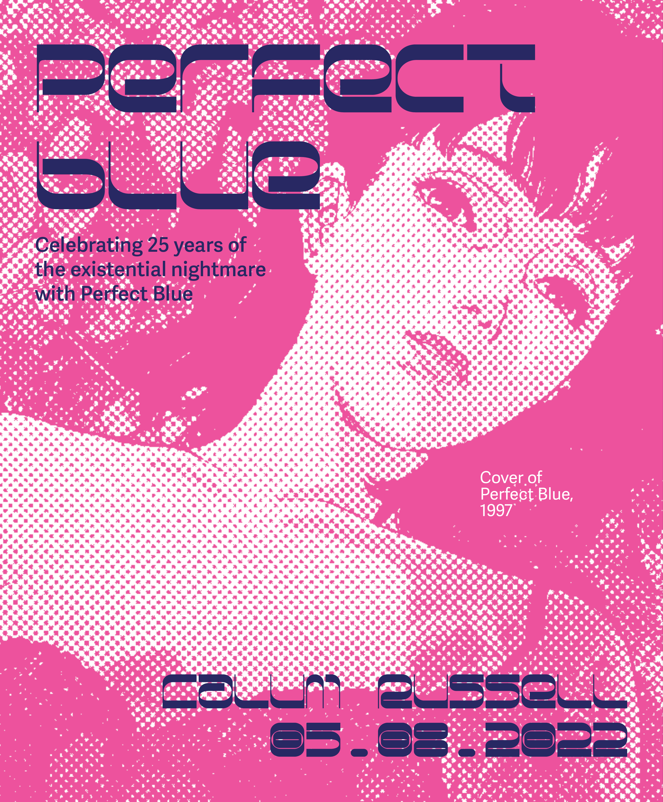

MOE EBII
Selected Projects
The Lost Words
Blue Girl
Dogs on Instagram
Tokki Chan
The Garden of Forking Paths
Editorial Spread
The Story of Tanabata
Perfect Blue
Projects
Archives
Moe Ebii is a designer based in New York, Tokyo and Mumbai, studying
Communication Design (BFA) at Parsons School of Design.
胡井萌（エビイモエ）はニューヨーク、東京、ムンバイで活動し、パーソンズ芸術大学でコミュニケーションデザインを専攻するデザイナーです。
Contact
